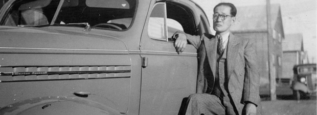

Le 2 juin 1898, la Police à cheval du Nord-Ouest (P.C.N.-O.) inscrivit l’arrivée d’un chercheur d’or au nom de Tanaka, originaire de Yokohama au Japon, alors qu’il franchissait le col Chilkoot. En 1901, on ne comptait officiellement que 84 Japonais, 7 Chinois et aucun « hindou » au Yukon. Souvent au début du 20e siècle, on classait à des fins statistiques toutes les personnes d’origine asiatique dans une seule catégorie sans indiquer leur lieu d’origine. Parfois, des termes qui pouvaient prêter à confusion comme « Hindoos » étaient utilisés pour les dénommer.
Au Yukon comme dans le reste du pays, les personnes d’origine asiatique étaient victimes de préjugés sociaux et de lois discriminatoires. La Loi de l’immigration chinoise de 1885 avait imposé à chaque immigré chinois un « impôt de capitation » ou une « taxe d’entrée ». En 1908, le ministre japonais des Affaires étrangères, Tadasu Hayashi, conclut une entente à l’amiable avec Rodolphe Lemieux, ministre canadien du Travail, afin de limiter l’immigration de ressortissants japonais au Canada. Pendant de nombreuses années, les personnes d’origine asiatique ainsi que les femmes et les Autochtones n’eurent pas le droit de voter.
En dépit des préjugés et des inégalités que les résidents d’origine asiatique du Yukon durent supporter, ils trouvèrent leur place comme mineurs, ouvriers, domestiques, membres d’équipage de bateaux à aubes, entrepreneurs et même agents de la P.C.N.-O.
Les membres de la Commission royale, sur la véranda du Dr Thompson à Dawson, août 1903; un domestique asiatique est visible à l’arrière-plan.
AY, fonds J.B. Tyrrell, 82/15 nº 290
AY, GOV 1681 f.31
Population du Yukon par origine ethnique, 1901-1961 – Pendant plusieurs années, les personnes d’origine japonaise au Yukon furent plus nombreuses que celles d’origine chinoise bien que leur nombre respectif restât très petit.
AY, Recueil 1961-0058
Les employés de la Banque Canadienne de Commerce à Dawson, s.d.
AY, fonds Myron Burr, 90/24 nº 12
Masayuki Sakata est né au Japon vers 1889 et est arrivé à Dawson avec ses parents le 15 avril 1907. Ici, il s’est taillé une réputation d’entrepreneur avec des restaurants à Dawson, Mayo et Keno. Il a aussi mis en place un programme de repas du midi pour les écoliers de Dawson. Dans les années 1930, il a travaillé pour la Treadwell Yukon Company Ltd. dans les mines d’argent de Keno Hill. Plus tard, il a tenu le Rex Café à Dawson et le Sourdough Café à Keno. Le 11 décembre 1969, il est devenu membre du Yukon Order of Pioneers. Il est mort à Whitehorse le 22 avril 1974.
Massa Sakata à Mayo, 1937.
AY, collection Histoire des Asiatiques au Yukon, 2006/146 nº 18